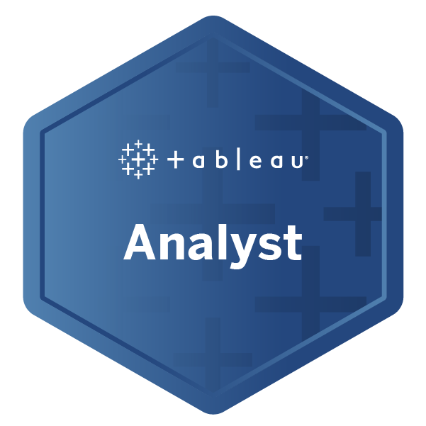
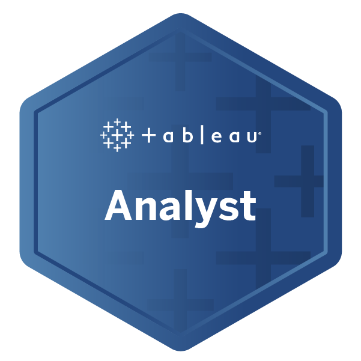

Certification Authority : AWS
Badges:
Certification Authority : Coursera
Certification Authority : DataCamp
Project Description: Neural Information Processing Systems (NIPS) is one of the top machine learning conferences in the world where groundbreaking work is published. In this Project, a large collection of NIPS research papers from the past decade is analyzed to discover the latest trends in machine learning. The techniques used here to handle large amounts of data can be applied to other text datasets as well. Familiarity with Python and pandas is required to complete this Project, as well as experience with Natural Language Processing in Python (sklearn specifically).
Description: For subscription-based businesses, reducing customer churn is a top priority. In this Power BI case study, a dataset from an example telecom company called Databel is investigated and their churn rates are analyzed. Analyzing churn is not limited to knowing what the churn rate is; but it is also about figuring out why customers are churning at the rate they are, and how to reduce churn. All these questions are answered by creating measures and calculated columns while eye-catching report pages are simultaneously created.
Description: In this Power BI case study, a real-world job posting dataset is explored to uncover insights for a fictional recruitment company called DataSearch. Power Query is utilized to investigate and clean the data to find out what skills are most in-demand for data scientists, data analysts, and data engineers. DAX is also used to build insightful visualizations based on the findings. Finally, a business dashboard is created by synergizing every profounding insights so that questions posed by the DataSearch team can be answered.
Description: In this Power BI case study, a dataset for a fictitious software company called Atlas Labs is explored. This case study focuses on importing, analyzing and visualizing Human Resources data in Power BI. Exploratory data analysis is carried out and DAX is used to help build powerful visualizations. Analysis is completed by diving deeper into attrition and what factors impact attrition. This analysis will help the organization determine what action they will need to take to retain more employees. The case study is finalized by making design changes to the report that provides a clean, branded design.
Description: This case study exposes and prepares candidates to tackle real-world problems in the field of inventory analysis. A dataset from a wonderful fictitious company named WarmeHands Inc is analyzed. As with many retailers, WarmeHands wants to investigate possible improvements in inventory management and purchases. As evident in real-world case, not everything is perfect. Investigation starts by using Power Query for cleaning and exploring the data to verify that everything makes sense. Next, some manipulations works are carried out utilizing intermediate DAX formulas for analyzing the clean information to obtain focused insights. Finally, some attractive yet informative report pages are created. By the time the case study is completed, candidates will be more confident in performing inventory analysis using Power BI.
Description: This Power BI case study follows a real-world business use case where the concepts of ETL and visualization are applied. Through Power BI and Power Query Editor, the development of a complete Power BI report starting from the data integration from multiple sources, data transformation, modeling, and then visualization will be executed. A sales and market share analysis will be carried out, focusing not only on the company's performance internally, reflecting on how well the products sell, but also externally analyzing how well they are doing against competing manufacturers. Thus, business users can make informed decisions and actions on their data. By the end of this case study, a stronger understanding of competitor sales analysis is achieved.
Certification Authority : Tableau
Badges:
 

Certification Authority : Kaggle
Updated: 31 October 2023, Version 1.10, Copyright © 2023 Aaron Soh Kee Kun. All rights reserved.